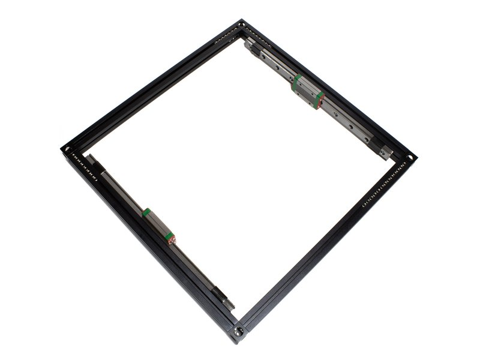
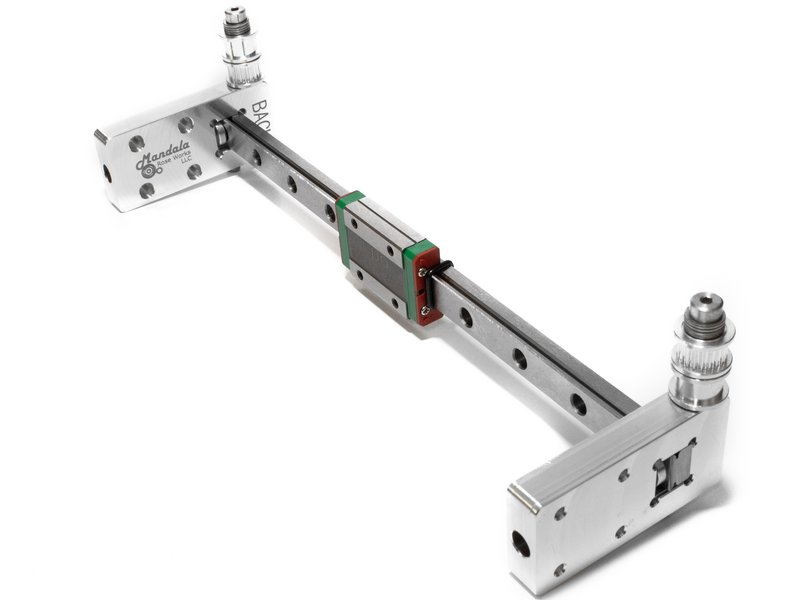
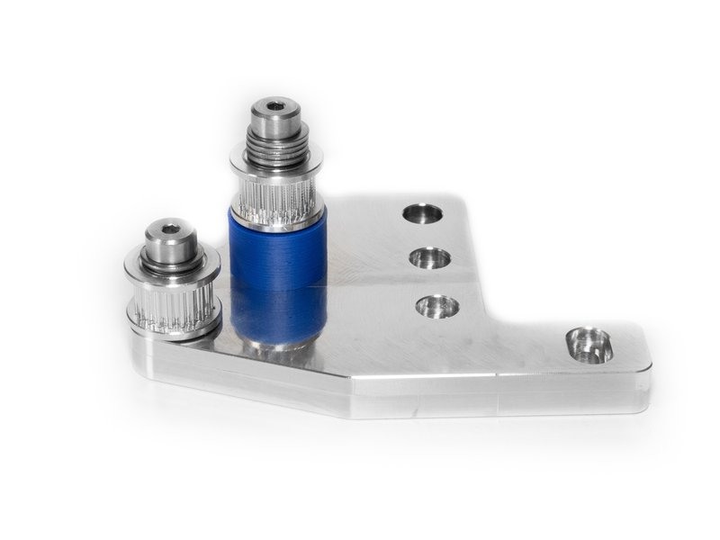
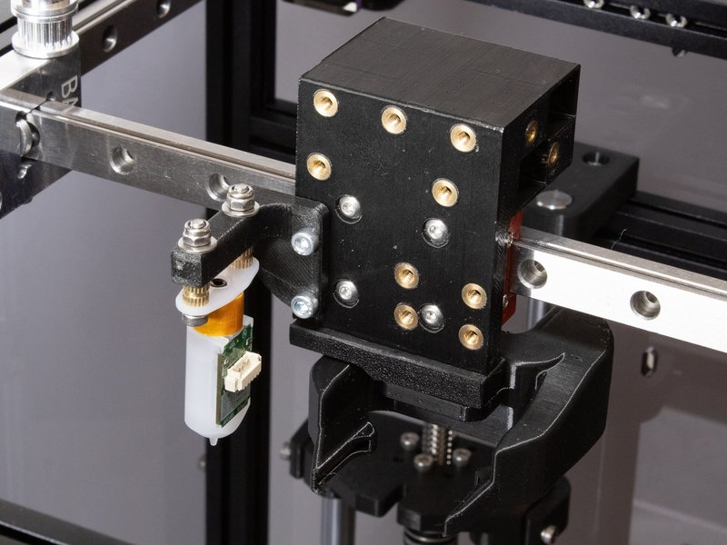

RailCore® Mini Kit

Build Guides Related to the RailCore® Mini Printer kit.
- A) IntroductionOverview
 B) Prep1 steps
B) Prep1 steps
C) Top Extrusions Assembly12 steps D) Bottom Extrusions Assembly10 steps
D) Bottom Extrusions Assembly10 steps E) Upright Extrusion / Frame Final Assembly3 steps
E) Upright Extrusion / Frame Final Assembly3 steps F) Z Installation9 steps
F) Z Installation9 steps G) Sides Installation6 steps
G) Sides Installation6 steps H) Z Motors and Leadscrews4 steps
H) Z Motors and Leadscrews4 steps
I) Y Rail Installation5 steps
J) X/Y Steppers and Idlers9 steps
K) Y Carriage7 steps L) X/Y Belts9 steps
L) X/Y Belts9 steps M) Hotend and Extruder3 steps
M) Hotend and Extruder3 steps N) Aligning your RailCore5 steps
N) Aligning your RailCore5 steps O) Bed2 steps
O) Bed2 steps P) Electronics7 steps
P) Electronics7 steps Q) Wiring the Electronics12 steps
Q) Wiring the Electronics12 steps R) Firmware, Config, and Smoke Test5 steps
R) Firmware, Config, and Smoke Test5 steps- S) First Moves11 steps
- T) Adjusting Your Configuration6 steps
Whole build on one page (for printing or offline reading)